Genel Bilgiler
Bazı projelerde, taşıt yolunu çeşitli unsurların (taş, ağaç vb.) düşmesine karşı koruma işlevi gören bir duvar tanımlamak ve ayrıca bazı durumlarda zemin jeolojisi nedeniyle bir duvar inşa etmek gerekir. İletişim kutusu, her türlü geometriyi tanımlamaya olanak tanıyan kapsamlı bir parametre listesi sunar:
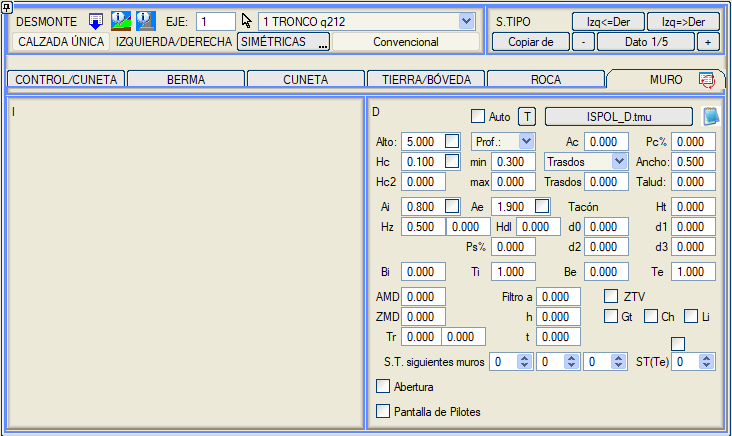
 simgesine tıklandığında bu menünün eski görünümüne erişilebilir: simgesine tıklandığında bu menünün eski görünümüne erişilebilir:
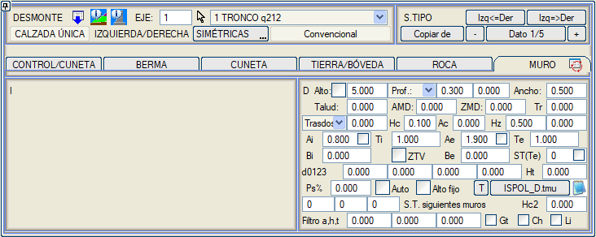
Programın çalışma şekli şöyledir: ISTRAM®BIM, araziye ulaşmak için gereken yüksekliğin tip kesit tarafından öngörülen yüksekliği aşıp aşmadığını kontrol eder ve eğer aşıyorsa, toprak yarması burada belirtilen parametrelere göre inşa edilmiş bir düşey duvar ile değiştirilir.
Kullanıcının tanımlayabileceği parametreler şunlardır:
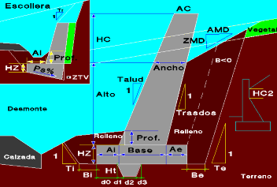
Yükseklik
|
Duvarın yüksekliği. |
Eğer kesitin yüksekliği burada tanımlanandan daha az ise, tüm kesit duvara dönüştürülür.
Yükseklik'in yanındaki kutucuk işaretlenerek, duvar nominal yüksekliğine ulaşmadan araziyi kesse bile duvarın toplam Yükseklik+Hc yüksekliği korunur. |
Derinlik
|
Duvarın derinliği
|
Bu, duvar geometrisini tanımlamak için varsayılan seçenektir.
İki değer girmek için iki metin kutusu vardır: minimum ve maksimum derinlik. Maksimum derinliğe minimum derinlikten daha büyük bir değer girilirse, program duvar taban kotunun boyuna yönde sabit kalması için en uygun derinliği belirler. Böylece, duvarın başlangıç KM'sinde eğim pozitifse minimum derinlik, negatifse maksimum derinlik alınır.
Derinlik, varsayılan olarak doğal araziye göre referans alınır, ancak açılır kutudan seçilerek kaya horizonlarından birine göre de tanımlanabilir. Eğer kesitin başlangıç noktasının kotu kaya kotunun altındaysa, derinlik bu noktadan itibaren ölçülür.
|
Genişlik
|
Duvarın genişliği
|
Duvarın arazi ile kesiştiği noktadaki genişliği.
|
Şev
|
Görünen yüzün şevi
|
1'e karşılık (yatay) şev oranı.
|
AMD
|
Duvar bitiş şevinin genişliği
|
Eğer duvarın tam arazi ile kesişim noktasında bitmesi istenmiyorsa, bu iki değerle tanımlanan bir şevli kesişimle bitirilmesi için bu iki değer tanımlanabilir.
Bu AMD ve ZMD değerleri, bazı gelişmiş yarma geometrisi tanımlama modlarında rol oynar.
|
ZMD
|
Duvar bitiş şevinin düşey mesafesi |
Tr
|
Duvar kretindeki dolgu için şev.
|
Duvar kretinden araziye kadar olan dolgu için şev.
|
Sırt/ Taban
|
Sırt şevi / taban genişliği.
|
Öncelikle, açılır kutudan hangi boyutu tanımlamak istediğimizi seçmeliyiz.
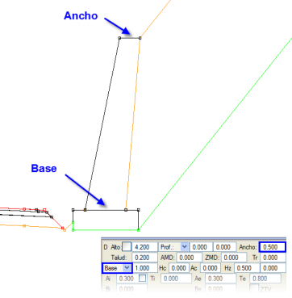Sırt: Duvarın sırt (görünmeyen yüz) şevini tanımlar.
Taban: Duvarın taban genişliği.
Yandaki şemaya bakınız.
|
Hc
|
Kret yüksekliği
|
Duvarın arazi yüzeyinin üzerine ne kadar çıkabileceği.
|
Ac
|
Kret genişliği
|
Duvarın arazi yüzeyinin üzerine çıkan kısmının nihai genişliği.
AC parametresi (kretteki genişlik). Duvara bir kret eklendiğinde (HC > 0) ve AC > 0 değeri verildiğinde, duvarın iç yüz şevi krette kırılarak üst kısımda AC genişliğine ulaşır.
|
Hz
|
Pabuç kalınlığı
|
 Duvar pabucunun toplam kalınlığı (yandaki şemaya bakınız). Duvar pabucunun toplam kalınlığı (yandaki şemaya bakınız).
Bu kalınlığın yanında donatılı kalınlığı tanımlamak için ikinci bir kutucuk bulunur. Bu değer tanımlanırsa, donatılı kalınlığa kadar olan kısım DUVAR PABUCU olarak, alt kısım ise PABUÇ ALTI olarak metrajlandırılır.
Duvar pabucu terasman yüzeyi ile çakıştığında, terasman yüzeyi duvar pabucunun üzerinden geçirilir.
Aynı şekilde, eğer toprak yarmasının konumu [ETEKTE SABİT] ise,
duvar hendekten veya kayadan itibaren yerleştirilir ve şevler duvar kretinden arazi yüzeyine kadar çizilir. Aksine, konum [BAŞTA SABİT] ise, duvar şevlerin üzerine yerleştirilir.
|
Hdl
|
Grobeton kalınlığı
|
Duvar pabucunun altına bir grobeton kalınlığı belirtir.
|
Ai, Ae
|
Duvar topuklarının genişliği
|
İç (Ai) ve dış (Ae) topuk genişliği.
Ai ve Ae'nin yanında, programı toplam genişliği (Ai + Taban + Ae) korumaya zorlayan kutucuklar bulunur. Eğer sadece biri işaretlenirse, bu toplam genişliği korumak için işaretlenen genişlik değişir. Eğer her ikisi de aynı anda işaretlenirse, her iki genişlik de nominal değerlerine orantılı olarak değişir.
 Pabuç toplam genişliğini koruma imkanı.
Krette bir genişlik ve Ai ile Ae pabuç payları ile tanımlanmış bir duvar için. Bu seçenek etkinleştirildiğinde, Ai+Genişlik+Ae genişliği korunur. Duvar yükseldikçe ve sırt ile iç yüz şevlerine bağlı olarak duvar tabanı genişler, bu durum Ai ve/veya Ae azaltılarak telafi edilir. Pabuç toplam genişliğini koruma imkanı.
Krette bir genişlik ve Ai ile Ae pabuç payları ile tanımlanmış bir duvar için. Bu seçenek etkinleştirildiğinde, Ai+Genişlik+Ae genişliği korunur. Duvar yükseldikçe ve sırt ile iç yüz şevlerine bağlı olarak duvar tabanı genişler, bu durum Ai ve/veya Ae azaltılarak telafi edilir.
|
Ti, Te
|
Kazı şevleri
|
Duvarın iç (Ti) ve dış (Te) kazısının şevlerini tanımlar.
|
Bi, Be
|
Kazı payları
|
Pabucun her iki tarafında, iç (Bi) ve dış (Be) kazı paylarını tanımlar.
Duvar pabucu için kazı. Dış pay Be. Negatif bir Be değeri, pabucun üst köşesinden itibaren bir (-Be) payı uygulanacağını gösterir. (2013'ten önceki sürümlerde negatif bir değer, dış şevin üst köşeden uygulanacağını ancak 0 pay ile uygulanacağını belirtiyordu. Bu revizyondan itibaren, önceki bir revizyonun .vol dosyasında negatif bir Ae değeri okunursa, -0.001 olarak değiştirilir ve pay uygulanmaz, sadece şev üst köşeden uygulanır).
|
ZTV
|
Zapata Trasdós en Vertical (Düşey Pabuç Sırtı)
|
Anroşman durumlarında, bu kutucuk işaretlenerek pabuç sırtının duvar sırt şevini takip etmesi yerine düşey olması sağlanır.
|
ST(Te)
|
Duvar Pabucu için Dış Kazı Şevi
|
Bu şev, bir Tip Kesit numarası ile değiştirilebilir. Bu durumda, o TK'nın toprak yarması için tanımlanmış Parametrik veya Vektörel geometri kullanılır (şevler ve palyelerle birlikte).
Duvar pabucunun dış kazı geometrisi için bir Tip Kesit seçildiğinde, pabuç bu seviyelere ulaşırsa kayalardaki yarma geometrileri de kullanılır.
Duvar pabucu kazısının dış şevi, 68 nolu yüzeyin (Kod 1399) bitiş noktasına kapatılabilir. Ayrıca, ST(Te) üzerindeki kutucuğu işaretleyerek bu kesiti duvarın 1290 kodlu yüksekliğinden (dış kısım) başlatabiliriz.
|
d0, d1, d2, d3, Ht
|
Pabuç dişinin boyutları
|
Pabuç dişinin boyutlarını tanımlar.
|
Ps%
|
Taban eğimi
|
Anroşman durumlarında, tabanın enine eğimini yüzde olarak tanımlar.
|
Oto
|
Tablodan otomatik duvar
|
Duvar Tabloları bölümüne bakınız. |
Sabit Yükseklik
|
Sabit yükseklikte duvar
|
Belirli bir yüksekliğe sahip bir duvarın, derinliği belirtilenden daha fazla olmak zorunda kalsa bile yüksekliğini korumasını sağlar.
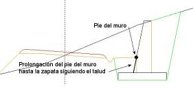Eğer duvarın bir şevi, derinliği ve pabucu varsa, duvarın eteği şevi takip ederek pabuca kadar uzatılır.
PLAN ÇİZGİSİ ve 3D ÇİZGİ modları için sabit yükseklikte bir duvar tanımlanırsa, önce duvar uygulanır ve eğer araziye ulaşmazsa, duvarın kretinden 3D çizginin konumuna veya plan çizgisinin konumundaki araziye kadar bir şev çizilir.
Eğer sabit yükseklikle tanımlanan duvar araziyi aşarsa, AMD/ZMD ile oluşturulan eğim araziden daha düşükse araziyi tekrar kesmek için AMD/ZMD kutucuklarını kullanabiliriz.
|
Sonraki duvarların T.K.
|
Sonraki duvarlar için alternatif tip kesitler
|
Bunları kullanarak bir tip kesitin her iki tarafında dört adede kadar duvar tanımlayabiliriz. Birincisi yüksekliği ve kretinin AMD ile ZMD değerleriyle tanımlanır. Bu kretin sonunda bir sonraki duvar başlar, onun sonunda üçüncüsü vb. Bu sonraki duvarların geometrisi, numaraları ilk duvarın Sonraki duvarların T.K. kutucuklarına yazılan diğer tip kesitlerde tanımlanır.
Bu duvarlar için pabuç ve kazıları kendi T.K.'larında tanımlandığı gibi oluşturulur. Eğer FİLTRE DUVAR tipinde bir yarma kaplaması tanımlanmışsa, bu eleman bu duvarlar için de oluşturulur. |
| Hc2 |
Sırt şevinin başlangıcı |
Dolgu sonu ile sırt şevinin başlangıcı arasındaki mesafeyi tanımlar. |
Filtre a
|
Filtre genişliği
|
Filtrenin taban genişliği.
|
Filtre h
|
Filtre konum yüksekliği
|
Duvar pabucundan filtrenin tabanına olan mesafe. Eğer h değeri negatifse, filtre tabanı duvar pabucuna bitişik ve üst kısmına kadar h yüksekliğinde yerleştirilir. |
Filtre t
|
Filtre şevi
|
Filtrenin şevi.
|
Gt
|
|
 Eğer tanımlanmışsa, Duvar Filtresinin arkasında Geotekstil tabakası. Eğer tanımlanmışsa, Duvar Filtresinin arkasında Geotekstil tabakası.
|
Ch
|
|
Duvarın görünen yüzünün kaplaması.
|
Li
|
|
Duvar sırtı ve pabucun o tarafı için su yalıtım membranı.
Gt, Ch ve Li elemanlarının enkesitteki uzunluğu ve eksen boyunca kısmi ve kümülatif alanı ölçülür. BIM'de eksene bağlı yüzeysel elemanlar olarak oluşturulurlar.
|
| Girinti | Duvar kretindeki dolgu için girinti |
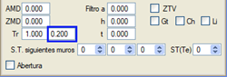
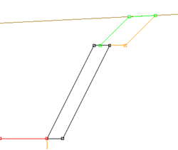 | | Boşluk |
| İki kot arasında duvarda bir boşluk oluşturmaya olanak tanır. Eğer bu tip kesiti hesap bölgeleri menüsünde aynı tam duvarı içeren başka bir kesitin arasına eklersek, iki KM ve iki kot arasında bir boşluk elde ederiz. |
Üç basamağa kadar (dört genişlik) kademeli bir duvar tanımlamak mümkündür. Bunun için, açılır menüde Taban boyutu seçili olmalı, Hc2 yüksekliği için bir değer tanımlanmış olmalı ve [Kademeli Sırt] seçeneği etkinleştirilmelidir. Bu yapıldığında, Hc3, An3, Hc4 ve An4 yükseklik ve genişliklerini girme imkanı aktif hale gelir.
Duvar Tabloları
[T] düğmesi, yanında belirtilen kütüphane dosyasını çağırır; varsayılan olarak bu dosya, hem dolgu hem de yarma duvarları için bir tablo olan ve duvarı tanımlamak için bir dizi parametrenin önceden yapılandırılabileceği ISPOL_TD4.tmu'dur. Bu
tablo, dişlerin geometrisini tanımlayan beş parametreyi eklemeye olanak tanır. Tablodan bir duvar seçildiğinde, verileri mevcut kesite aktarılır. Her tip kesit ve her taraf için farklı bir tablo ilişkilendirilebilir. ISPOL_D2.tmu tablosu, her duvar için Bi ve Be değerlerini tanımlamaya olanak tanır.
Hem yarma hem de dolgu için geçerli olan ISPOL_TD4.tmu tablosu, bize ya sırt şevini ya da her duvarın taban genişliğini tanımlama imkanı verir. Sırt/Taban sütununa değer yazılır ve son sütun olan 0=Şev/1=Taban sütununda ne olduğu belirtilir. Bu tabloda taban genişliği kullanılır.
Eğer Oto kutucuğu işaretliyse,
program bu kesit için tanımlanmış olan .tmu tablosunda, yüksekliği-derinliği kesitin kenarından zemine olan yükseklikten büyük olan ilk duvarı arar. Tabloda duvarlar artan yüksekliğe göre sıralanmalıdır. Eğer duvar yüksekliğine göre tanımlanmışsa, bu seçenek de kullanılabilir, böylece arazi ile kesişim nedeniyle duvar daha düşük bir yüksekliğe sahip olduğunda ilgili duvar yerleştirilir.
Yüklediğimiz tabloları  simgesi ile düzenleyebiliriz. simgesi ile düzenleyebiliriz.
Anroşman Duvarı
 Bir anroşman duvarı tanımlamak için aşağıdaki parametrelere başvurulmalıdır: Bir anroşman duvarı tanımlamak için aşağıdaki parametrelere başvurulmalıdır:
- Anroşman pabucunun genişliği (Ai).
- Hendek bitiş noktasından pabuca kadar olan derinlik (Derinlik).
- Diş yüksekliği (Hz).
- Taban eğimi yüzde olarak (Ps).
Yarmadaki anroşman filtresi YARMA KAPLAMASI menüsünde tanımlanır.
Yarma duvarları tanımında ve anroşman durumlarında, ZTV kutucuğu işaretlenerek pabuç sırtının duvar sırt şevini takip etmesi yerine düşey olması sağlanabilir.
 Varsayılan olarak, program duvar ve duvar pabuçlarının metrajlarını anroşman ve anroşman tabanlarından ayırmaz. Bu ayrımı etkinleştirmek isteniyorsa, Boykesit'in PARAMETRELER menüsündeki Anroşmanları duvarlardan ayır seçeneğini etkinleştirmek gerekir. Varsayılan olarak, program duvar ve duvar pabuçlarının metrajlarını anroşman ve anroşman tabanlarından ayırmaz. Bu ayrımı etkinleştirmek isteniyorsa, Boykesit'in PARAMETRELER menüsündeki Anroşmanları duvarlardan ayır seçeneğini etkinleştirmek gerekir.
Duvar Taban
Kotu
Boykesit menüsünün EK BİLGİLER açılır menüsünden DUVAR TABAN KOTU menüsüne erişilir. Bu menü, her bir taraf için duvar taban kotunun, ya kullanıcının belirttiği haritadaki bir 3D çizginin kotlarına göre (3D Çizgi seçeneği) ya da Kırmızı Kot'ta tanımlanmış bir boykesite göre hesaplandığı kesimleri tanımlamayı sağlar.
Varsayılan olarak Tabloya Göre modunda olan açılır menüde, seçenek olarak 3D Çizgi bulunur. Eğer veri satırı yoksa, eksenin başlangıç KM'sinden sonuna kadar bir tane oluşturulur. Üçüncü seçenek olarak, Boykesite Göre seçeneği vardır. Bu durumda, duvarın kotu, Kırmızı Kot > Duvar Tabanı'nda girilen verilere göre tanımlanır. Önceki modda olduğu gibi, seğer veri satırı yoksa, eksenin başlangıç KM'sinden sonuna kadar bir tane oluşturulur.
Aynı isimli kutucuk işaretlenerek 3D çizgi, pabuç taban kotunu verebilir.
Verileri bir taraftan diğerine kopyalamak için Diğer tarafa kopyala mümkündür.
Bu veriler,  kutucuğundan .cbm uzantılı dosyalarla kaydedilebilir ve kutucuğundan .cbm uzantılı dosyalarla kaydedilebilir ve  kutucuğu ile yüklenebilir. Sıfırla simgesi kutucuğu ile yüklenebilir. Sıfırla simgesi  ile ekrandaki tüm veriler temizlenir. ile ekrandaki tüm veriler temizlenir.
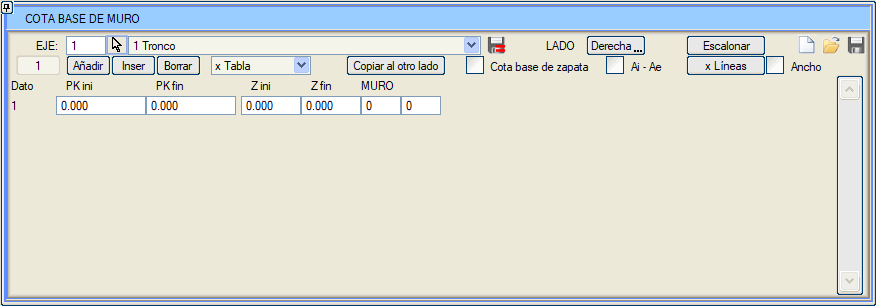
Hesaplama yapıldığında, program her kesimin başlangıç ve bitiş KM'lerinde bir enkesit enterpole eder. Eğer bir kesim, bir sonrakinin başladığı aynı KM'de biterse, duvar tabanı için farklı kot değerleriyle iki tekrar eden enkesit görünür ve bu şekilde kademe fark edilir.
Bir duvar numarası tanımlama imkanı vardır.
Sıfırdan farklı bir değer yazılırsa ve yarmadaki ilgili tip kesitte duvarlar duvar tablosuna göre Otomatik seçeneği ile tanımlanmışsa, tüm kesim için tablodaki duvar (tablonun satır numarasına göre) yüksekliğinden bağımsız olarak yerleştirilir.
Her bir Başlangıç KM, Bitiş KM kesiminde, bu kesimde aralarında bir geçiş yapmak için duvar tablosundan iki farklı duvar tanımlanabilir. Eğer başlangıç duvarı 0'dan farklı ve bitiş duvarı 0 ise, geçiş yapılmaz ve tüm kesime başlangıç duvarı yerleştirilir.
Pabuç taban kotu seçeneği,
ek olarak burada her kesim için duvar pabucunun başlangıç ve bitiş taban kotlarını da tanımlama imkanı sunar, böylece değişken kalınlıkta pabuçlar oluşturulur.
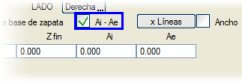Ai-Ae kutucuğu etkinleştirildiğinde, KM'lerle belirlenen kesimlerde pabucun duvarın içine ve dışına doğru olan değerlerini tanımlamayı sağlar.
Genişlik kutucuğu etkinleştirildiğinde, Pki ve Pkf sütunlarında belirtilen kesimleme ile duvarın genişliğini tanımlayabiliriz.
Kademelendir: önceden tanımlanmış uzunlukta ve yatay tabanlı duvar modüllerine göre duvar taban kotunun otomatik olarak kesimlenmesini sağlar. Seçeneğe tıklandığında parametrelerle bir iletişim kutusu açılır:
- Çalışmanın yapıldığı taraf: (Sağ/Sol/Her ikisi)
- Başlangıç KM ve Bitiş KM. Bu KM aralığında ve seçilen tarafta, çalışmayı etkilememesi için duvar taban kotu verileri önceden temizlenir.
- Modül uzunluğu. Duvarın konumuna göre KM farkı veya gerçek uzunluk olarak ölçülebilir. Araç, her modülde duvar için tanımlanan derinliği kullanarak duvar tabanının kotunu analiz eder ve bu kesim için elde edilen en düşük kotu alır.
- Bu KM'lerde duvar kotunu analiz etmek için minimum çalışma aralığı.
[Çizgilerden] aracı, eğer duvar kretinin iki çizgisine sahipsek genişliği otomatik olarak belirlemeyi de sağlar.
[Çizgilerden] kutucuğundan, aşağıdaki 3D çizgilere sahipsek bu tabloyu ve duvar kret kotu tablosunu doldurabiliriz:
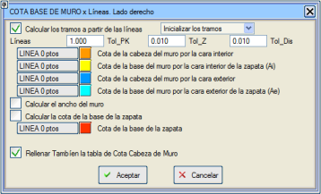
- Duvarın iç kenarı ile kret kotu
- Duvarın dış kenarı ile kret kotu
- Pabucun iç kenarı ile duvar taban kotu
- Pabucun dış kenarı ile duvar taban kotu.
- Pabuç taban kotu.
- Duvar taban kotlarını hesaplamak için 3 veya 4 gereklidir.
- Duvar kret kotları için 1 veya 2.
- Ai ve Ae'yi hesaplamak için 1, 2, 3 ve 4 gereklidir.
- Pabuç taban kotu için 5.
Duvarı planda konumlandırmak için şu modlar kullanılmalıdır:
Kesimleri hesaplarken iki seçeneğimiz var:
Boykesit hesaplandığında, duvar taban kotunu tanımlamak için kullanılan 3D çizgilerin köşe noktalarında da enkesitler enterpole edilir.
Azaltılmış dolgu kesitlerinde: arazi palyede veya üstyapıların kapanma şevinde kesildiğinde. Eğer duvar yüksekliği ile (duvarı zorlamak için) ve ayrıca tablodaki duvar taban kotu kırmızı kot-terasman kesişiminin altında tanımlanmışsa. Bu durumda kesit arazi ile kesişimde bırakılmaz, kırmızı kot terasman ile kapatılır (bu nokta zaten arazinin altında olsa bile) ve buradan itibaren duvar inşa edilir. Tanımlanan taban kotuna ulaşması için duvara yeterli yükseklik verilmeli veya dolgu geometrisinin yüksekliği 0 olarak ayarlanmalıdır.
Kazık Perdesi
Düşey duvarlar için duvar, bir kazık perdesi ile değiştirilebilir. Her kazığın çapı duvar genişliğine eşit veya daha az olmalıdır. Daha az olması durumunda, duvarın iç kısmı bir perde kaplaması ile doldurulur. Bir kaplama yüksekliği tanımlamak mümkündür: 0 bırakılırsa, kazıkla birlikte dibe kadar devam eder. Aksi takdirde, tanımlanan derinlikte kesilir.
Kazıklar arasında bir ayırma payı tanımlamak mümkündür. Eğer kesit tipi
DUVAR+DÖŞEME ise, Toprak/Kemer sekmesinde
döşemenin kazıkları delmemesi için bir girinti tanımlanabilir. Ayrıca, Duvar + Döşeme tip kesiti deverli olduğunda bir kazık perdesi ekleme imkanı vardır.
Duvar pabucunun altına kazık ekleme imkanı vardır. Kazıklar kutucuğu etkinleştirilerek,
bunlar çap, uzunluk, soket mesafesi, kazıklar arası minimum pay ve duvarın başlangıcı ile ilk kazık arasındaki başlangıç mesafesi ile tanımlanabilir. Eğer duvarın başlangıcı ile ilk kazık arasındaki başlangıç mesafesi için sıfır değeri atanırsa, bunlar
her bir kazık çifti arasındaki minimum paya uyarak tüm duvar boyunca dağıtılır. Eğer pozitif bir değer atanırsa, ilk kazık
bu değerden itibaren yerleştirilir ve kazıklar sığdığı sürece tam pay kullanılarak devam edilir.
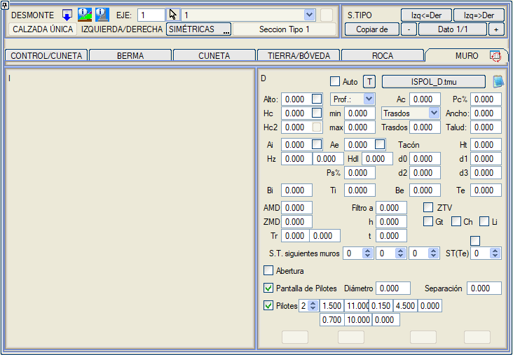
Enine yönde iki sıraya kadar kazık tanımlanabilir, aralarındaki mesafe verilerek. Ayrıca iç ve dış kazık için bir düşey açı tanımlamak da mümkündür.
Çizimler-> .lil Düzenle-> Bordürler, Döşemeler, ... menüsünde bu kazıkları gösterme imkanı eklenmiştir.
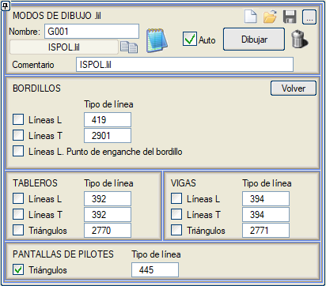
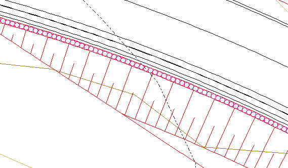
BIM modeli için, ağaç yapısında KAZIK PERDESİ klasörünün altında onu oluşturan tüm kazıklar tek tek listelenir.
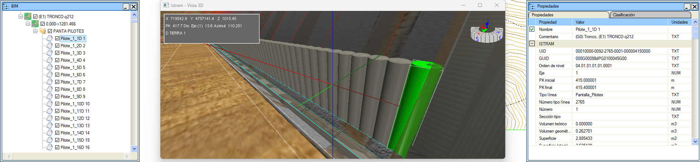
Kazık perdeleri ile inşa edilmiş duvarlar veya duvar + döşeme içeren bir eksenin planını çizdiğimizde veya BIM modelini oluşturduğumuzda (orta refüjde de), her eksen için kazıkların merkez koordinatları ve taban kotunu içeren bir pan_pil_n.top dosyası oluşturulur.
Ayrıca kazıkların aplikasyonu için aşağıdaki bilgileri içeren bir liste .xlsx formatında otomatik olarak oluşturulur:
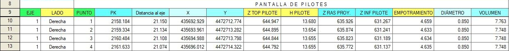
|